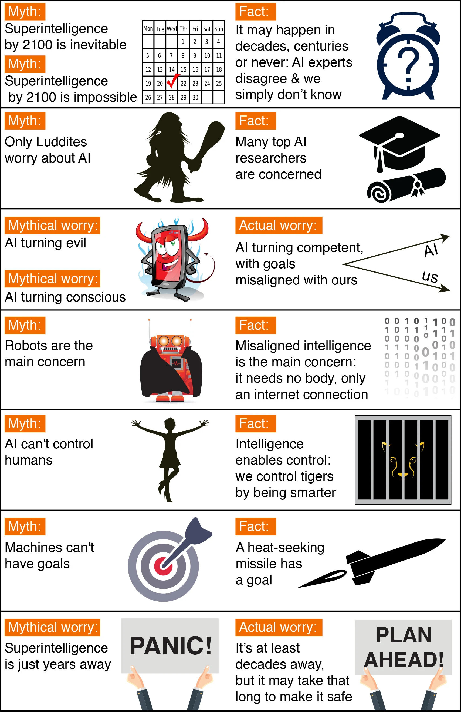

A captivating conversation is taking place about the future of artificial intelligence and what it will/should mean for humanity. There are fascinating controversies where the world’s leading experts disagree, such as: AI’s future impact on the job market, if/when human-level AI will be developed, whether this will lead to an intelligence explosion, and whether this is something we should welcome or fear. But there are also many examples of of boring pseudo-controversies caused by people misunderstanding and talking past each other. To help ourselves focus on the interesting controversies and open questions — and not on the misunderstandings — let’s clear up some of the most common myths.
